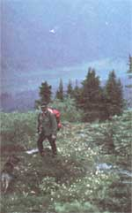

Photos by Frank and Ingrid Wilcox
In this snapshot Frank is hiking in the Selwyn Mountains of the Yukon. He named this particular area the ""Ingrid Lake Region "", but I'm not too sure the name will stick.